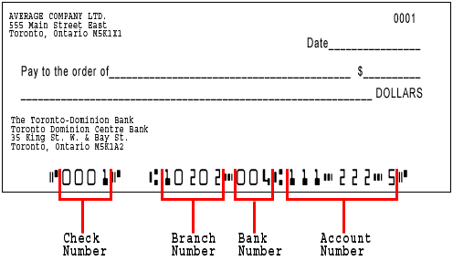

Your banking information can be found through a check that is linked to your bank account or through your bank account itself.
- Go to your online bank account and log in
- on the right handside you should see an option such as "void check"
- After downloading the void check, you should see a picture like the following:
